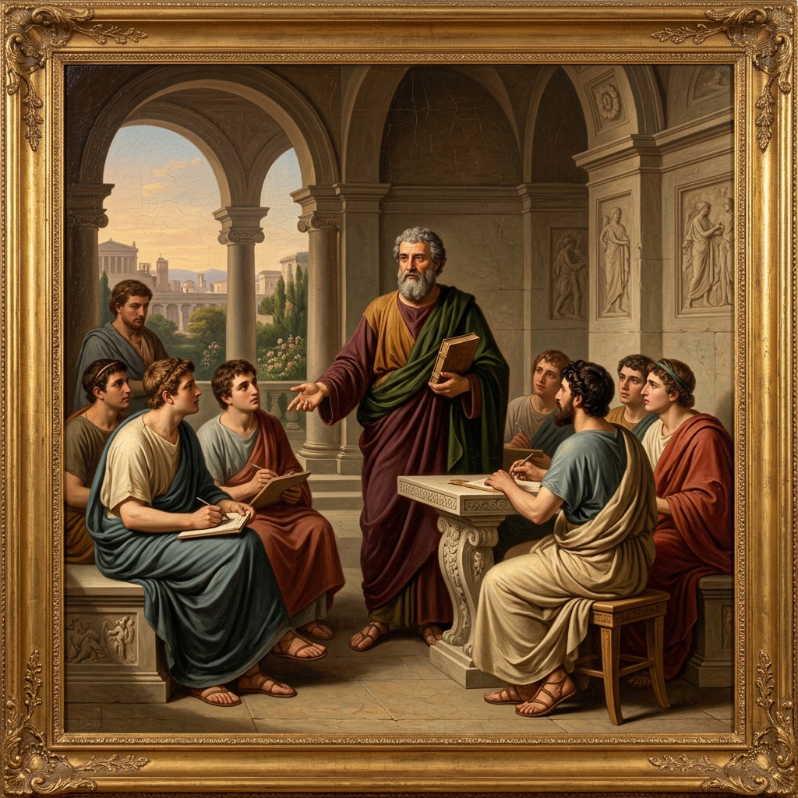
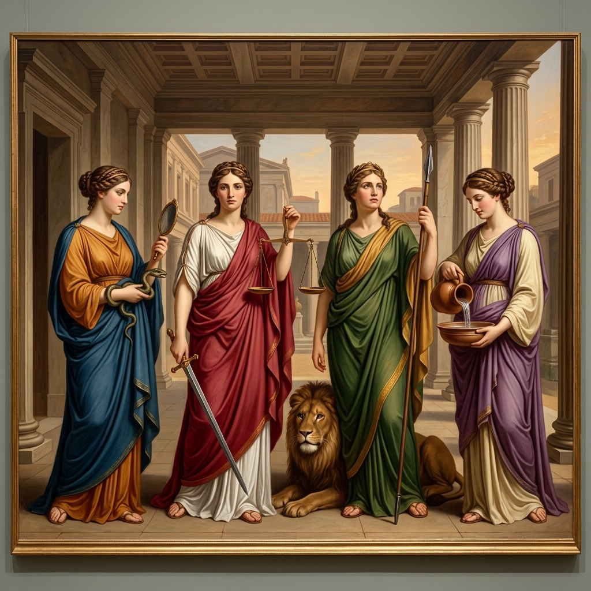
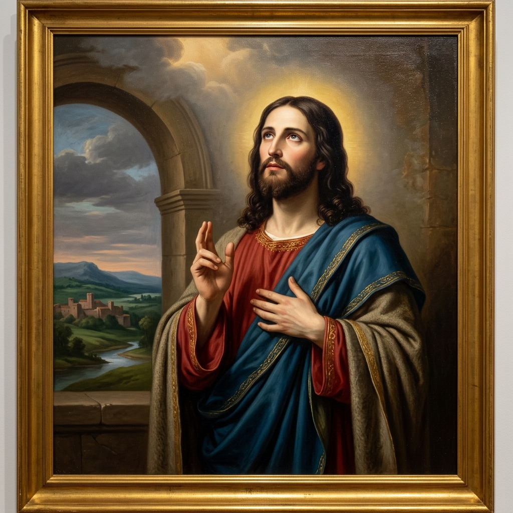

Cristo, modelo perfeito de virtude — e o lugar onde acontece a verdadeira mudança
Quero começar com uma frase. Deixem que ela vá caindo devagar, palavra por palavra, quase como um exame de consciência:
"Cuide os teus pensamentos, porque eles se convertem em palavras.
Cuida as tuas palavras, porque elas se convertem em ações.
Cuida as tuas ações, porque elas se convertem em hábitos.
Cuida os teus hábitos, porque eles se convertem no teu caráter.
Cuida o teu caráter, porque ele se converte no teu destino."
Faz alguns anos, essa frase me chamou a atenção num filme sobre Margaret Thatcher, "A Dama de Ferro". Fui atrás dela na internet depois — e descobri que não é dela; ela só a repetia. É atribuída, com alguma incerteza ainda, a um empresário americano chamado Frank Outlaw. Outras vezes vocês vão ouvir por aí que é de Gandhi, ou até de Lao Tsé — mas não é. E, sinceramente, pouco importa quem disse primeiro. O que importa é o encadeamento que ela descreve: pensamento, palavra, ação, hábito, caráter, destino. É exatamente esse encadeamento que eu quero abrir com vocês hoje, uma dobra de cada vez.
Estou lendo agora, por acaso, um livro que se chama "Os 7 Hábitos das Pessoas Altamente Eficazes", do Stephen Covey. E vale a pena contar um pouco da história desse livro, porque ela conecta direto com o que eu quero dizer. Covey passou anos — parte disso como pesquisa do seu doutorado — estudando a literatura americana sobre sucesso e realização pessoal, mais ou menos dos últimos duzentos anos. E ele percebeu uma virada interessante: durante muito tempo, praticamente todos os livros sobre "ser bem-sucedido" falavam de caráter — integridade, humildade, coragem, paciência, fidelidade à palavra dada. Só depois da Primeira Guerra Mundial é que essa literatura vira o eixo para outra coisa: a aparência, a técnica de comunicação, a estratégia de causar boa impressão nos outros.
Covey batizou essas duas visões com dois nomes que eu acho muito precisos: Ética da Personalidade — voltada para fora, para a imagem, para as técnicas de agradar e influenciar — e Ética do Caráter — voltada para dentro, construída sobre princípios estáveis, que não mudam com a moda do momento. E é daí que nasce o convite central do livro dele: viver uma vida baseada em princípios, não em técnicas nem em aparências.
Pois bem — o que Covey chama de "caráter", construído sobre princípios, os gregos já chamavam de areté. É a palavra que a gente traduz por virtude: uma excelência, uma perfeição da personalidade. E São Josemaria dizia algo que vai guiar toda a nossa conversa hoje: as virtudes sobrenaturais se apoiam nas virtudes humanas. Por isso as virtudes humanas importam tanto — inclusive, e sobretudo, para quem quer levar a sério a vida cristã.
E aqui entra a responsabilidade que é o ponto de partida de tudo. Quando a gente lê o Evangelho com atenção, uma verdade volta sempre: nós somos responsáveis pela realização da nossa própria vida. A graça de Deus é gratuita — ela inicia, inspira, fortalece — mas não é dada a uma pedra nem a uma planta. É dada a seres livres, que podem dizer sim ou não, que podem fazer frutificar o dom recebido ou desperdiçá-lo.
E Cristo, para explicar isso, usa uma imagem que vai atravessar a nossa conversa inteira hoje: a vida cristã como a construção de um edifício. E Ele aponta três formas de fracassar nessa construção. Vejam com vocês:
Uma casa construída sobre a areia. Vem a tempestade, e a ruína é grande — não porque faltou boa vontade, mas porque faltou uma base sólida.
O homem que começa a construir uma torre sem calcular o custo, e a deixa pela metade — motivo de riso para quem passa. Quantas vidas ficam "a meia construção"!
São Paulo fala em construir com ouro, prata e pedras preciosas — ou com madeira, feno e palha. O fogo do dia do Senhor vai revelar o que vale o trabalho de cada um.
É esta terceira falha — a dos materiais — que eu quero explorar com vocês hoje, do começo ao fim. Porque o material com que se constrói uma vida cristã sólida, capaz de resistir ao fogo e à tempestade, tem um nome preciso: as virtudes.
Então esse é o meu objetivo para hoje: que vocês saiam daqui sabendo por que as virtudes importam, quais são, como se estruturam, como se conquistam — e, sobretudo, como elas nos aproximam de Cristo, que é o modelo perfeito e o ponto de chegada de tudo isso.
A definição mais simples de virtude é "hábito bom" — uma disposição estável que se manifesta em atitudes contínuas. Mas essa definição sozinha é perigosa, porque nem tudo que parece virtude é virtude de verdade. Antes de eu dizer o que ela é, deixem-me desmascarar com vocês quatro miragens — aparências de virtude que enganam como um oásis no deserto.
A primeira são as virtudes vaidosas. Jesus fala explicitamente delas no Sermão da Montanha: "guardai-vos de fazer as vossas boas obras diante dos homens, para serdes vistos por eles" (Mt 6,1). Tem a virtude-vitrine, vivida para exibição, e a virtude-espelho, vivida para autoadmiração — como o fariseu que subiu ao templo e agradeceu a Deus por não ser como os outros homens (Lc 18,9-14).
A segunda são os hábitos rotineiros. Gente muito cumpridora — do dever, da religião, da família — mas de forma morna, forçada, sem alma. "Este povo me honra com os lábios, mas o coração está longe de mim" (Mt 15,7). Não é cumprir; é cumpri-mentir.
A terceira são as inclinações temperamentais. Bons sentimentos naturais, fáceis, agradáveis — mas que não custam esforço nenhum, e que escondem uma segunda face, exigente só quando convém. É aquela pessoa amável e sociável com os amigos, mas insuportável em casa.
E a quarta são as virtudes-fogueira. Ardem uma noite inteira e depois só sobram cinzas. É Pedro, na Última Ceia, dizendo com toda a veemência: "ainda que seja preciso morrer contigo, não te renegarei!" (Mc 14,31) — e, horas depois, dormindo no Horto e negando três vezes.
Descartadas essas quatro miragens, fica a definição verdadeira, a que o Catecismo nos dá: as virtudes humanas são atitudes firmes, disposições estáveis, perfeições habituais da inteligência e da vontade, que regulam os nossos atos, ordenando as nossas paixões e nos guiando segundo a razão e a fé (CIC 1804). Elas não nascem prontas — como não nasce pronto nada que tenha valor — e elas nos dão, diz o próprio Catecismo, domínio e alegria. "Pessoa virtuosa é aquela que livremente pratica o bem."
Voltemos à imagem do edifício. Para fundações profundas de grandes construções, se usam estacas — cravadas bem fundo, invisíveis — e é sobre elas que se erguem os pilares que sustentam tudo o que a gente vê.
As estacas são as virtudes humanas, também chamadas morais: prudência, justiça, fortaleza e temperança, e as muitas virtudes "satélites" ao redor delas — coragem, generosidade, sobriedade, amizade, constância, mansidão. São humanas porque qualquer pessoa, de qualquer época e cultura, pode e deve vivê-las. Sobre isso concordam a filosofia grega, a sabedoria oriental, a lei de Moisés e o Cristianismo.
Os pilares são as virtudes sobrenaturais, as infusas: as teologais — fé, esperança, caridade —, puro dom gratuito de Deus, e as virtudes morais já elevadas pela graça. E elas se firmam bem em nós quando encontram apoio sólido nas virtudes humanas.
Reparem bem nessa figura, porque eu vou voltar a ela várias vezes hoje: os muros do canal contêm e conduzem a água. Sem muros, a água se derrama e se perde. A conclusão que importa é esta: a virtude infusa não substitui a virtude humana — ela se apoia nela. Um homem sem rijeza natural não sustenta a fortaleza sobrenatural; a magnanimidade infusa não se desenvolve numa alma humanamente pusilânime. Como dizia São Josemaria: "as virtudes humanas são o fundamento das sobrenaturais" (Amigos de Deus, 91-92).
O Cristianismo não rejeitou a sabedoria clássica sobre as virtudes — ele a assumiu. Mas corrigiu quatro pontos cegos do ideal pagão. Primeiro: o virtuoso pagão é autossuficiente, ignora a humildade. Segundo: ele ignora a cura interior pelo arrependimento e o perdão. Terceiro: não tem o amor como centro, desconhece a caridade. E quarto: não conhece o modelo supremo e definitivo, que é Jesus Cristo, perfeito Deus e perfeito homem.
Elas se chamam cardeais porque, em latim, cardo significa eixo, ou dobradiça — todas as demais virtudes humanas se agrupam em torno destas quatro. Vamos passar por elas uma a uma.

O Catecismo a define assim: é a virtude que dispõe a razão prática a discernir, em qualquer circunstância, o nosso verdadeiro bem, e a escolher os meios adequados para o pôr em prática (CIC 1806). Os antigos a chamavam de auriga virtutum — o cocheiro que segura as rédeas de todas as outras virtudes. Santo Tomás ensina que ela age em três passos: primeiro a reflexão — vencer a preguiça de pensar, ter um tempo fixo para isso, pedir conselho com humildade; depois o juízo — discernir o ponto de equilíbrio, colocar Deus como prioridade; e por fim a decisão — porque, como se diz, o homem prudente é lento na reflexão e rápido na execução.
Eu pergunto para vocês: vocês têm o hábito de se aconselhar antes de uma decisão séria, ou caem na autossuficiência? E, às vezes, a prudência de vocês não é, na verdade, medo disfarçado de cautela?
É a vontade constante e firme de dar a Deus e ao próximo o que lhes é devido (CIC 1807). Começa pelo respeito à dignidade de cada pessoa — imagem de Deus, alguém por quem Cristo morreu — e se estende à equidade nos juízos, à verdade nas palavras, e até ao direito e ao dever de calar, quando falar feriria a caridade sem necessidade nenhuma. Como Jesus mesmo disse: "tudo o que quereis que os homens vos façam, fazei-o vós a eles" (Mt 7,12).
Eu desprezo, discrimino ou ridicularizo alguém — mesmo que seja só em pensamento? Eu falo a verdade com justiça, ou uso a "sinceridade" como desculpa para ferir?
O Catecismo diz que ela dá segurança nas dificuldades, firmeza e constância na procura do bem, e nos torna capazes de resistir às tentações, de superar os obstáculos, de vencer o medo, inclusive o medo da morte (CIC 1808). Ela tem duas faces: a capacidade de empreender o que é difícil, e a capacidade de resistir e suportar. E dela nascem virtudes satélites: a magnanimidade, que é aspirar a metas grandes; a paciência, que é suportar o mal sem se revoltar; e a constância, que é não desistir no longo prazo.
Eu fujo de tarefas só porque são difíceis? Vivo na cultura do menor esforço? Tenho medo do sacrifício, esquecendo que nenhum ideal se realiza sem ele?
Ela modera a atração pelos prazeres e procura o equilíbrio no uso dos bens criados; assegura o domínio da vontade sobre os instintos, e mantém os desejos dentro dos limites da honestidade (CIC 1809). Reparem que o Catecismo não diz "reprime" nem "suprime" — o Cristianismo não é inimigo do corpo nem do prazer, basta lembrar de Caná (Jo 2,1). As suas virtudes satélites são a moderação, a mansidão e a castidade — esta última, dizia São Josemaria, não é negação nenhuma; é "afirmação jubilosa", é "triunfante afirmação do amor".
Eu uso algo bom — a comida, uma tela, o descanso, um prazer legítimo — como instrumento para o mal, ou em excesso desordenado? Eu vivo a temperança com alegria, ou como um fardo ressentido?
O Catecismo resume o caminho inteiro numa frase só: as virtudes humanas são adquiridas pela educação, por atos deliberados, e por uma perseverança sempre retomada com esforço (CIC 1810).
Mas antes de entrar nesses três passos, quero fazer um esclarecimento que evita um erro muito comum: virtude não é a razão vencendo os sentimentos à força — é a razão e o sentimento alinhados. Santo Tomás faz uma distinção interessante: quem age bem contra a própria paixão, só à base do esforço da vontade, age de forma continente — já é louvável, mas ainda não é a virtude plena. A virtude de verdade acontece quando a própria sensibilidade já está educada e reage certo: eu sinto desagrado com a mentira, satisfação em ser sincero; a minha leitura emocional da situação já é, ela mesma, a leitura certa. Por isso a virtude é uma disposição gravada pela razão na própria afetividade. Um Padre da Igreja resumia bem: "como a chuva vem das nuvens, os sentimentos vêm das ideias."
Tem uma imagem simples, do livro "A Fortaleza", de Dom Rafael Sifuentes, que ajuda a lembrar disso: a pessoa virtuosa tem cabeça de gelo, coração de fogo e braço de ferro — pensa com serenidade e clareza, ama com intensidade, e age com firmeza. É quase o mesmo triângulo que a psicologia usa hoje na terapia cognitivo-comportamental: cognição, afetividade e comportamento — trabalhar as ideias e as ações para, com o tempo, reeducar o próprio sentimento.
O primeiro passo é a educação — as virtudes entram pelos olhos. Quem nunca viu a virtude ao vivo, nos pais, nos amigos, em bons exemplos, dificilmente entende a essência dela; vê a moral como um conjunto de imposições frias. Por isso o meio de formação insubstituível é contemplar as virtudes em Cristo, meditando o Evangelho, e conhecer as vidas dos santos, em quem Cristo se reflete como num espelho.
O segundo passo são os atos deliberados — a vontade que decide de verdade. Não são deliberados os atos puramente mecânicos, as rotinas viciadas, os comportamentos apenas reativos. É preciso um "querer" formulado com toda a alma, não um simples "eu gostaria". Como dizia São Josemaria: "um querer sem querer é o teu" (Caminho, 714).
E o terceiro passo é a perseverança — a árvore, não o poste. Um poste "continua" no lugar, mas só se deteriora com o tempo. Uma árvore continua crescendo, floresce, dá frutos. "Começar é de todos; perseverar, de santos" (Caminho, 983). E essa perseverança precisa ser refletida, não emocional; sustentada pela contrição quando a gente falha, pela humildade diante do próprio fracasso, e por um otimismo confiante: "fracassei? Não fracassei — adquiri experiência. Para a frente!"
Deixo com vocês um último conselho bem prático: não é a simples repetição mecânica de um ato que gera virtude. Um soldado obrigado a varrer o quartel todos os dias, sem nunca enxergar aquilo como um bem, não adquire a virtude da ordem — só cumpre pena. O que gera hábito de verdade é o ato acompanhado da experiência de que aquilo foi bom. E uma estratégia que funciona muito bem é agir um pouco além do que hoje a gente "é capaz": quem se acha tímido demais para falar em público pode começar fazendo uma pergunta em voz alta numa reunião pequena. Custa da primeira vez; custa menos da segunda; e pouco a pouco aquilo se torna natural. E vale o alerta simétrico: assim como a virtude se ganha agindo bem repetidamente, ela também se perde agindo mal repetidamente — cada pequena concessão cauteriza um pouco a consciência.
"Nada aperfeiçoa tanto a personalidade como a correspondência à graça." São Josemaria, Sulco, 443
Dois autores, duas gerações, o mesmo alerta. Um fala em "máscaras de virtude" e em duas "viroses" espirituais — o orgulho, que finge virtude só para se admirar, e o hedonismo, que rejeita toda virtude que exija esforço. O outro batiza um retrato ainda mais afiado, o do "beato": alguém que confunde caridade com falta de caráter; que espera tudo de Deus, mas não faz o menor esforço pessoal — o que, na verdade, é tentar a Deus, não confiar Nele. É alguém que ignora, entre as virtudes humanas, uma em especial: a valentia. "Quando operário, mau companheiro; quando empregado, mau cavalheiro." E a conclusão, sem meias palavras: a beatice é um vício como outro qualquer.
A síntese das duas fontes é a mesma: a santidade não pede menos personalidade humana — pede mais. "Quem disse que prescindir das virtudes humanas é humildade? Hoje, mais do que nunca, precisamos ser muito homens." E, no fundo, é a mesma ideia de antes: nada aperfeiçoa tanto a personalidade como a correspondência à graça. A graça não apaga o caráter — ela o revela em plenitude.

Chegamos ao centro da nossa conversa. Eu não quero apenas dizer que Cristo "praticou" as virtudes — quero ir mais fundo: Cristo é o único homem cuja natureza, perfeita e sem pecado, nunca encontrou obstáculo algum para viver a virtude. Em nós, o desenvolvimento das virtudes esbarra em inclinações desordenadas e maus hábitos. Nele, não. Por isso Ele pôde viver, sem atrito nenhum entre o humano e o divino, tudo o que há de mais comum na vida de um homem.
"Tudo o que era humano, nEle era virtude."
Vejam a prudência: o discernimento diante da armadilha do tributo a César (Mt 22,15-21); "sede prudentes como as serpentes e simples como as pombas" (Mt 10,16); e o silêncio, antes da resposta que não trai nem a justiça nem a misericórdia, diante da mulher adúltera (Jo 8,1-11).
Vejam a justiça: o Juízo Final, onde Ele se identifica com o mais pequeno dos irmãos (Mt 25,31-46); a purificação do templo, o zelo pela justiça devida à casa do Pai (Mt 21,12-13); e a bem-aventurança — "bem-aventurados os que têm fome e sede de justiça" (Mt 5,6).
Vejam a fortaleza: Getsêmani, a angústia real, e ainda assim a decisão firme — "não seja feita a minha vontade, mas a tua" (Lc 22,39-44); e aquele detalhe do evangelho de Lucas, fácil de passar despercebido: quando chega a hora, Ele "endureceu o rosto para ir a Jerusalém" (Lc 9,51).
E vejam a temperança: o jejum e as tentações no deserto (Mt 4,1-11) — o domínio pleno sobre a fome real, sem que ela se torne senhora da vontade. Toda a cena do deserto antecede e sustenta a missão pública inteira.
E há um lado mais "carnal" desse modelo, que eu quero dizer sem pressa: Cristo também viveu o cansaço — sentou-se, exausto, à beira de um poço —, a fome e a sede, o choro real pela morte do amigo Lázaro, que "chorou... não por conveniência, mas porque estava realmente comovido em seu coração" (Jo 11,36), e o trabalho manual e silencioso de Nazaré, trinta anos antes de qualquer palavra pública.
"Bendito trabalho o dos homens! Bendita fadiga!"
E, por fim, a coroa de tudo isso: as virtudes teologais em Cristo. A fé — ao centurião, Ele diz: "em ninguém encontrei tamanha fé em Israel" (Mt 8,10). A esperança — diante do túmulo de Lázaro: "eu sou a ressurreição e a vida" (Jo 11,25). E a caridade, a maior de todas: "ninguém tem maior amor do que aquele que dá a vida pelos seus amigos" (Jo 15,13) — e Ele a vive, literalmente, na Cruz.
Santo Tomás ensina algo que eu quero deixar bem marcado: sem caridade, nenhuma virtude — humana ou infusa — tem mérito sobrenatural. É a caridade que, no fim, faz a água e os muros do canal se tornarem uma única coisa viva.
A meta de toda a vida cristã, e de todas as virtudes cristãs, é a identificação com Cristo — "até atingir o estado do homem perfeito, à medida da estatura completa de Cristo" (Ef 4,13). E aqui eu quero acrescentar a chave decisiva: essa identificação não acontece ao lado da vida humana, num compartimento "espiritual" separado — acontece dentro dela, na medida em que a vida humana é vivida com verdade.
É a ruptura entre a religião e a vida — viver um domingo voltado para Deus e uma semana inteira como se Ele não estivesse lá — que gera exatamente aquela beatice de que eu falei antes.
"Ou ficamos vencidos pelo trabalho, ou o santificamos. Não há meio-termo."
Deixo essa pergunta para vocês levarem para a segunda-feira: este trabalho, esta reunião, esta conversa difícil — vai ser vencida por mim, ou vai ser santificada por mim? Não é preciso abandonar a profissão para buscar a santidade. É preciso unir de novo o que só nós, com o nosso próprio esforço ou a nossa própria covardia, separamos: os afazeres humanos e a consciência diante de Deus.
Volto, para fechar, à imagem do canal, com o quadro completo: os muros somos nós, construídos pedra sobre pedra pelo esforço diário de sermos prudentes, justos, fortes e temperantes. A água é a graça de Deus, que Ele mesmo promete a quem constrói. Nenhuma virtude sobrenatural nasce no vazio; e nenhum esforço humano, por si só, basta.
Então esse é o convite que deixo para esta semana: escolham um único muro para reforçar. Um ato concreto de fortaleza — terminar até o fim o que dá vontade de abandonar. De prudência — uma decisão pensada com calma, não por impulso. De justiça — um gesto justo com alguém que depende de vocês. Ou de temperança — um pequeno excesso do qual vocês vão abrir mão. E confiem: onde há muro, a água de Deus não falta.
"Torna-te o que és" — não por conta própria, mas deixando que a graça edifique, sobre o alicerce que só nós podemos construir, a estatura completa de Cristo.
Francisco Faus, A Conquista das Virtudes. Jesús Urteaga, O Valor Divino do Humano (Quadrante, 2ª ed., 2016). Catecismo da Igreja Católica, nn. 1803-1830. São Josemaria Escrivá — Caminho, Sulco, Forja, Amigos de Deus. Stephen Covey, Os 7 Hábitos das Pessoas Altamente Eficazes.
Evangelhos: Mt 4,1-11; Mt 5,6; Mt 6,1; Mt 7,12.24-27; Mt 8,10; Mt 10,16; Mt 15,7; Mt 21,12-13; Mt 22,15-21; Mt 25,31-46; Mc 14,31; Lc 9,51; Lc 14,28-30; Lc 18,9-14; Lc 22,39-44; Jo 2,1; Jo 8,1-11; Jo 11,25-36; Jo 15,13; 1 Cor 3,9-15; Ef 4,13.